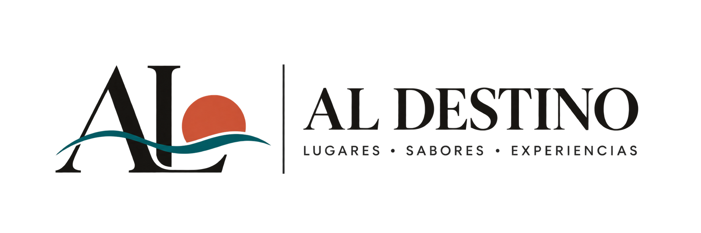
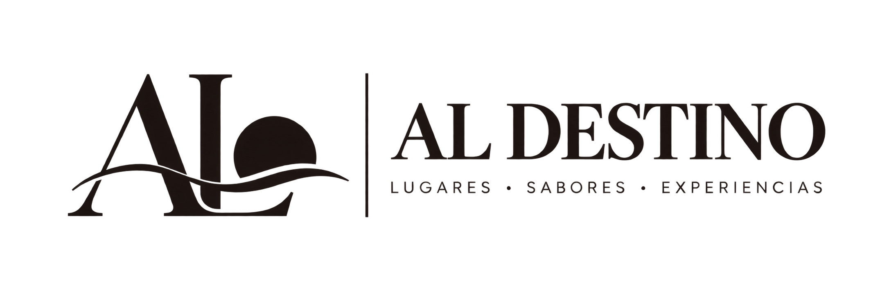
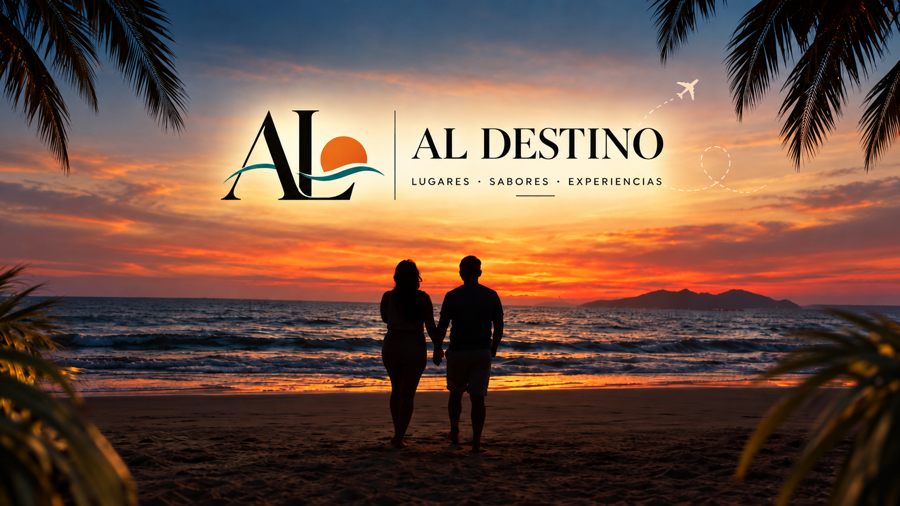
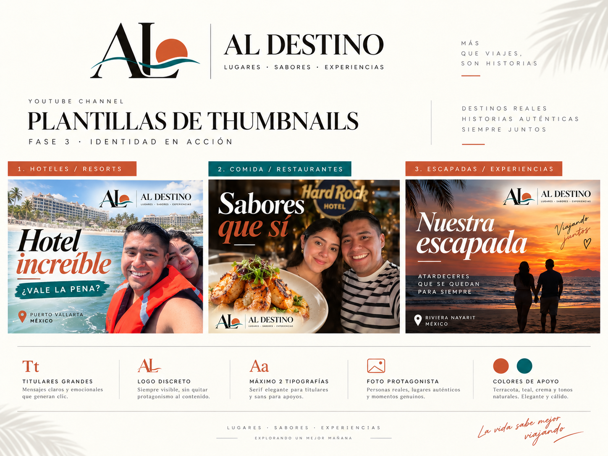
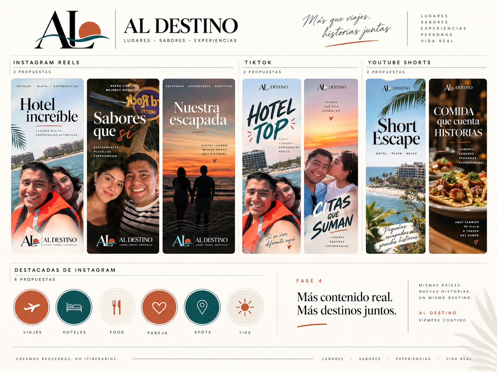

Logo principal
Composición horizontal aprobada visualmente. Los PNG deben cotejarse antes del uso definitivo.
Logos y monograma

Horizontal a color

Monocromático oscuro

Monocromático claro

Monograma AL
Paleta
Terracota
#E65F3C
Turquesa
#158A8A
Mostaza
#D9A21B
Arena
#F6EBDD
Verde petroleo
#1F4D4D
Cafe oscuro
#2B211D
Aplicaciones

Banner limpio

Miniaturas por categoría (referencia)

Verticales y destacadas (referencia)
Notas de producción
El pack incluye imágenes rasterizadas y tableros conceptuales; todavía no archivos vectoriales maestros ni plantillas editables de Canva. Las tipografías son Cormorant Garamond y Plus Jakarta Sans, sin archivos de fuentes incluidos.